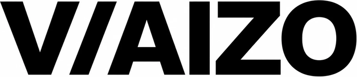

現場から考える
机上の理論だけでなく、現場のリアルな課題から出発し、解決策を考えます。
まずは日々の仕事を知るところから。人にしかできない仕事に集中できる仕組みを一緒に考えます。

AIエージェント開発・人材育成・M&Aを通じて、
事業の挑戦を支えます。
机上の理論だけでなく、現場のリアルな課題から出発し、解決策を考えます。
まずは小さく始めて、素早く学び、より良い形に磨き上げていきます。
学びと実践の機会をつくり、挑戦する人が成長できる環境を整えます。
アイデアや人材、企業をつなぎ、価値が広がる仕組みをつくります。